一阵子下来才明白,逆向其实会上瘾,尤其是我这种~ 天生就爱搞破坏的坏孩子来讲
探探是一个社交APP, 似乎不少人在上面找到另一半的. 这种卡片社交简单,背后隐藏的推荐逻辑,筛选逻辑才是它能如此盛名的原因.
要重点说明,这些需求是我一产品的同学给我提的, 绝非个人偏好~ 我不是那种人…
梗概
先上下图
(功能入口在 新手引导->探探怎么玩-> ):
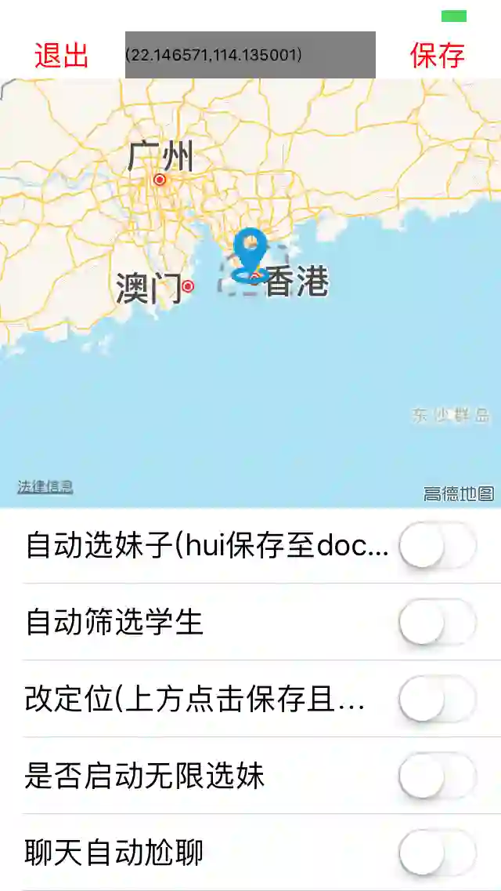
这是目前逆向后我给它新增的功能,因为工作也比较忙,就没有新增过多的需求,但是整个App的架构逻辑其实已经很清晰了, 基本可以合理的新增一些需求在里面, 这也说明探探的开发架构逻辑挺棒的.
功能简介
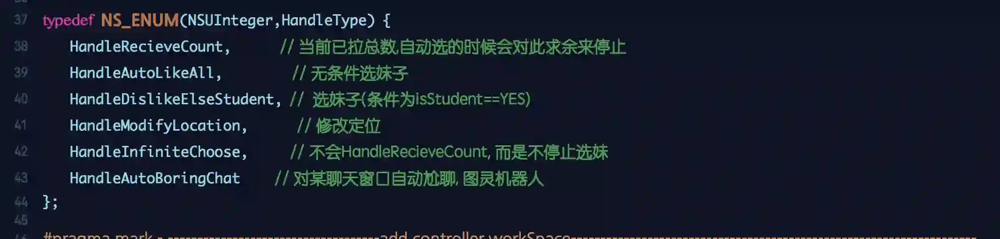
下方是一个简单的tableview, 功能的启动都在这里,当然功能是有互斥和优先级的,
- 同时开启无条件选妹和选妹子onlyStudent, 无条件选妹子优先.
- 为了更好的效果在主页的地方选妹子,我最后采取的是模拟点击likeButton,在NSTimer中执行,当刷的人对已拉取用户求余==0的时候停止, 如果不想停止就把infinite打开,这是一个疯狂的爬取,没有停止的线性条件,除非杀APP. 为什么这么做呢, 因为我把自动拉取的信息默认是保存到Document/cache.txt里面, 主要是照片的url和部分简介
- 自动尬聊采用的是图灵的API, 你拿到源码后需要替换为您的key, 谷歌搜索”图灵机器人”,打开后进入到某个想聊天的窗口, 它如果收到信息会自动跟她尬聊.
- 上方是用Mapkit,新增Mapview在上方,用来更改定位,然后下面的打开(不过测了下证明这块功能还有点问题的,有兴趣的哥们继续挖掘下)
开始调试
调试工具
- 依然是最酷的 MonkeyDev
- FLEX (reveal过期了,这是一个很棒的替代品), 下载后编译一下, 然后按照monkeyDev中wifi加入第三方库的方式操作即可
- frida-ios-dump 还是庆哥出品,砸壳后顺带把整个APP导出
- 其它的全程是cycript+LLDB调戏 就不累述了…
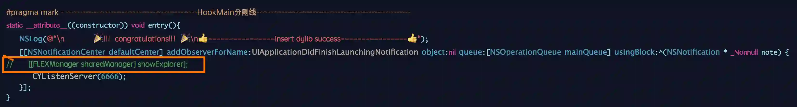
#import
// open it in here
[[FLEXManager sharedManager] showExplorer];
导入库之后,在注入成功的这个通知回调里,启动这个方法
调试遇到的问题
探探是有反调试的, 用的是sysctl. 很强
那么你调试的时候需要讲MonkeyDev里面的打开, 这个反反调试检测默认是关闭的,原因注释上有
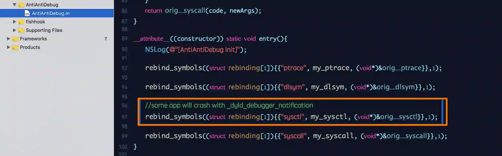
从需求粗发的debug
逆向App,我一般的套路都是酱紫.
设计需求 -> 需求在哪里会展示 -> 从view到Controller-> controller方法猜测 -> 结合monkeyDev进行方法trace -> 确认需求方法 -> hopper找方法地址 -> LLDB调试下断点 -> 查看调用栈(bt) -> 然后开始埋点尝试hook
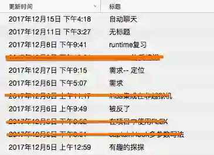
用笔记在记录每次你发现的新宇宙(虽然开始的很早,实际没有时间弄它…)
HookKKK
入口
hook位置:
入口开关之所以选在 [新手引导->探探怎么玩->], 因为很符合呀,介绍都免了
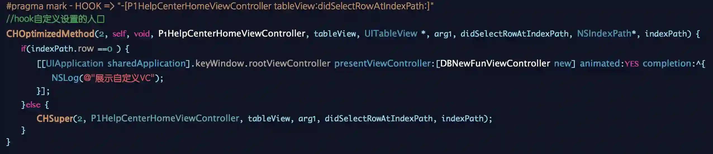
就是找到控制器后,发现这里是tableview , 直接hook了tableview的代理方法, == 0的时候进入.
UI层设计:
上方是mapview, 这本身就是一个内存问题,地图App都知道, 所以在dismiss的位置,需要很”干净”的把它清理一下.
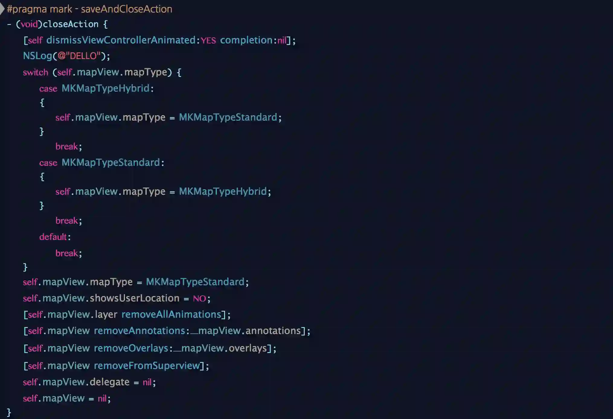
下方是tableView, 还是很简单cell注册来循环利用,省点内存
人物存储的方式
探探采取CoreData进行本地存储,用户的模型是UserObject
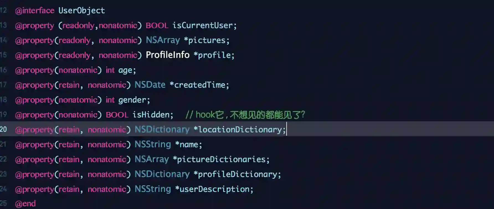
简要一些浅层面我所看到的:
- 其实又有
ProfileInfo存储用户的一些社会内容, 里面又包含学校信息在模型StudiesInfo和工作信息模型WorkInfo LocationInfo是用户的地理信息MembershipInfo似乎探探在一轮融资后要开启会员模式是真的SettingsInfo主要是你自己的一些信息,就是设置里面的,包含要不要阻拦联系人等- 其他深一点层面诸如
RelationshipObject/HiddenUsersCollection,等着有需要的去挖掘
其实这些都能座位你来筛选的网格,只不过你想怎么操作罢了
自动划妹子
P1HomeNearbyViewController是我们一进去的时候的控制器,我在viewDidAppear是时候进行了逻辑判断, 逻辑设置项来自自定义入口所写到的本地缓存,1 - 0字符串存储的方式进行boolValue处理:
全局的几个定义:
设置YES(1) or NO(0) 来存储:
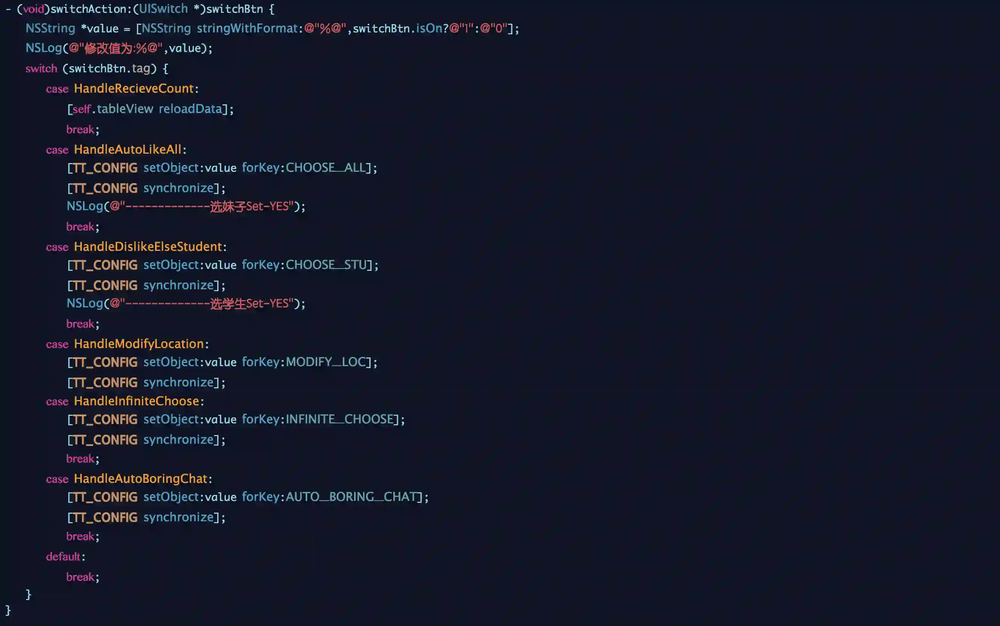
那么通过这样子,我们就能进行全局的逻辑判断了:
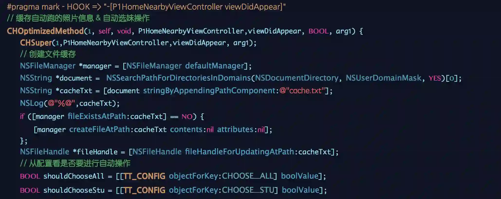
其中,我把这些我需要hook用到的头文件,从class-dump出来的抽出来, 进行@interface一下,来欺骗编译器,如果是@property就不需要继承什么, 如果是方法,报错的话可能需要继承NSObject或其他已定义的:
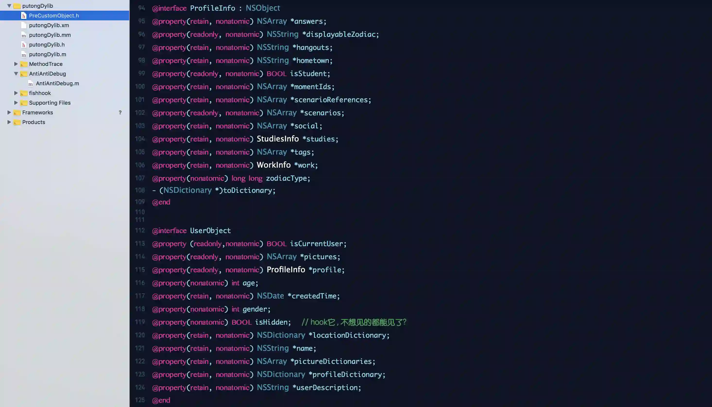
用起来的时候就跟正向开发很像了,你熟悉的味道:
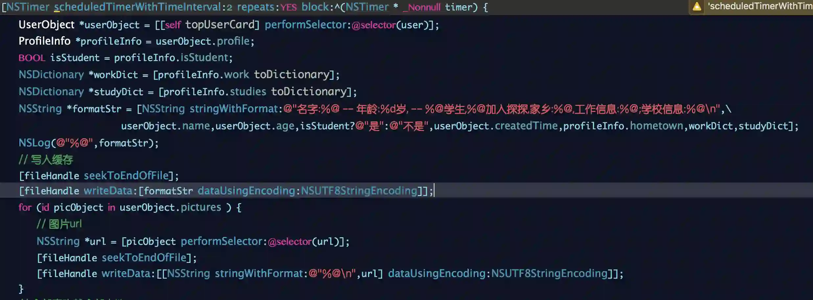
其中有尝试刷妹子这里,如果直接调用响应后的方法刷卡片, 会有一系列问题,最后认怂直接是模拟点击的.而且为什么用NSTimer而不是for循环之类呢,可能就是runloop层的概念了,当前运行NOPro,有兴趣的自行调戏
[likeButton sendActionsForControlEvents:[likeButton allControlEvents]];
改定位
该定位和大多数的App一样,但是探探有点麻烦的是我一直就没有刷出来地图过, (听说是触发”擦肩而过”这个业务逻辑才会展示地图),业务不熟真的很不好玩~
因为上层展示卡片的控制器是P1HomeLookingViewController,我直接trace到他有返回了信息:
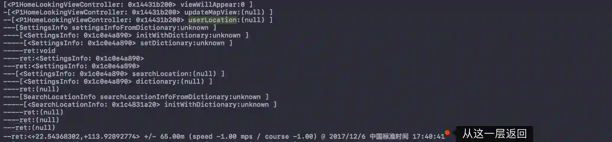
所以我也姑且很粗糙的做了hook,Mapview保存到配置的经纬度,在这里转为double值并返回:
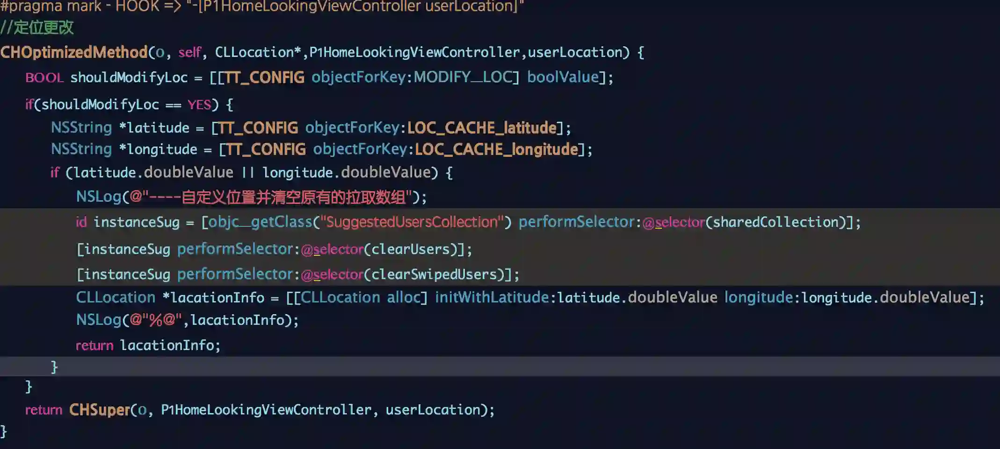
手动创建自定义的CLLocation对象,返回给它,核心方法:
CLLocation *lacationInfo = [[CLLocation alloc] initWithLatitude:latitude.doubleValue longitude:longitude.doubleValue];
自动尬聊
尬聊是一门技术, 猿不懂, 那找会的来帮忙吧~~
目前实现的单个尬聊, 多个尬聊尚存在问题, 且在有限的时间内就给到这样子的需求了
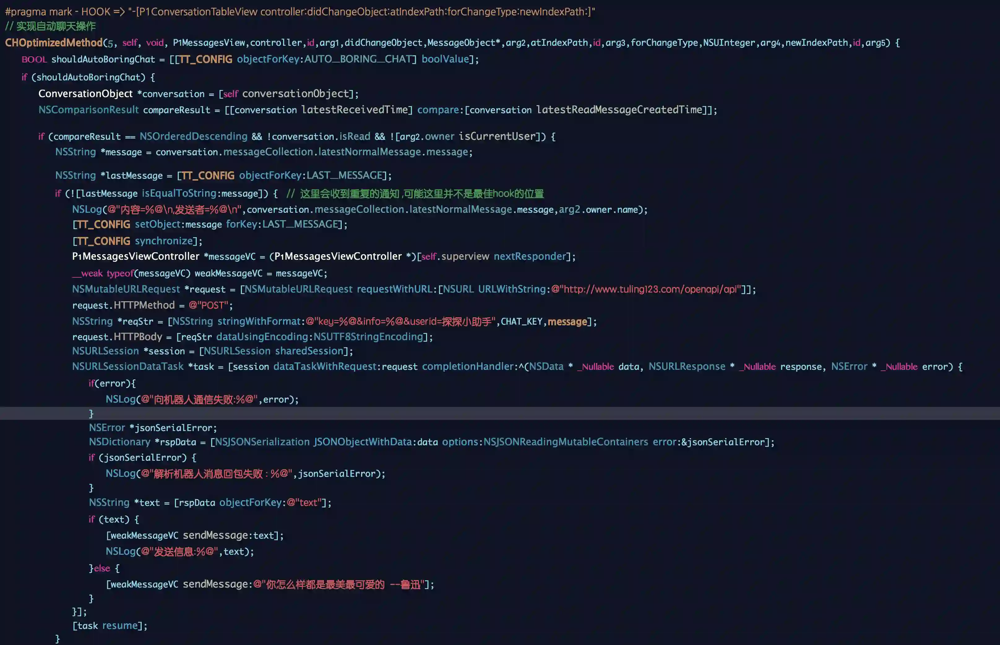
网络请求很粗糙了使用了NSURLSession,但能保证内存是不会问题.
#pragma mark - HOOK => "-[P1ConversationTableView controller:didChangeObject:atIndexPath:forChangeType:newIndexPath:]"这个方法其实未必是很合理hook地点, 原因是存在多次抛的通知, 我进行了过滤后才拿到那条到底是她刚才发的:
ConversationObject *conversation = [self conversationObject];
NSComparisonResult compareResult = [[conversation latestReceivedTime] compare:[conversation latestReadMessageCreatedTime]];
if (compareResult == NSOrderedDescending && !conversation.isRead && ![arg2.owner isCurrentUser]) {
NSString *message = conversation.messageCollection.latestNormalMessage.message;
NSString *lastMessage = [TT_CONFIG objectForKey:LAST_MESSAGE];
if (![lastMessage isEqualToString:message]) {
// 这里会收到重复的通知 ,可能这里并不是最佳hook的位置
}
}
- conversation是消息的模型,每条信息对应一个conversation,第一个过滤
本条消息的创建时间和上条已读消息的创建时间比对 - 消息不能是已读
- 消息的发送者不是自己
- 本条消息和配置的消息不同(确认是新的消息后回保存到配置,完整字符串比较)
在确认是最新消息后, 通过图灵机器人的接口, POST请求出去,剩下的就是解包-> 调方法发回去,其中主要的是:
P1MessagesViewController *messageVC = (P1MessagesViewController *)[self.superview nextResponder];
发送消息的方法在P1MessagesViewController,为了找到它,可真是废了一把劲, 最后就是这么简单
ano: 尬聊木有真实妹子,都是探探小助手帮的我 谢谢哦
总结
逆向真的会让人上瘾 , 主要的是保持你”猥琐的”好奇心~ , 工具的使用可能都差不多,训练的是一种敏感, 对方法敏感诸如此类呀
从逆向我们能快速知道别人的需求做了什么, 快速了解别人的业务等,是一种很高效快速的熟悉方式.
至此告一段落,代码直接见我的GIT
tantan_project
[仅供学习,注意尺度]